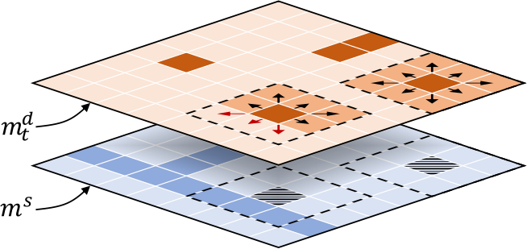
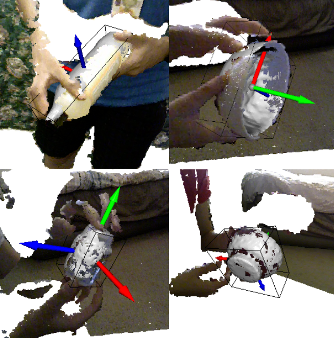
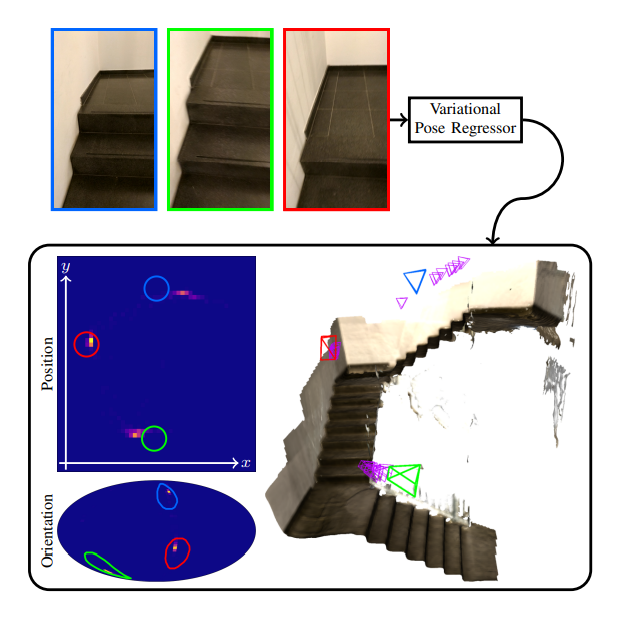
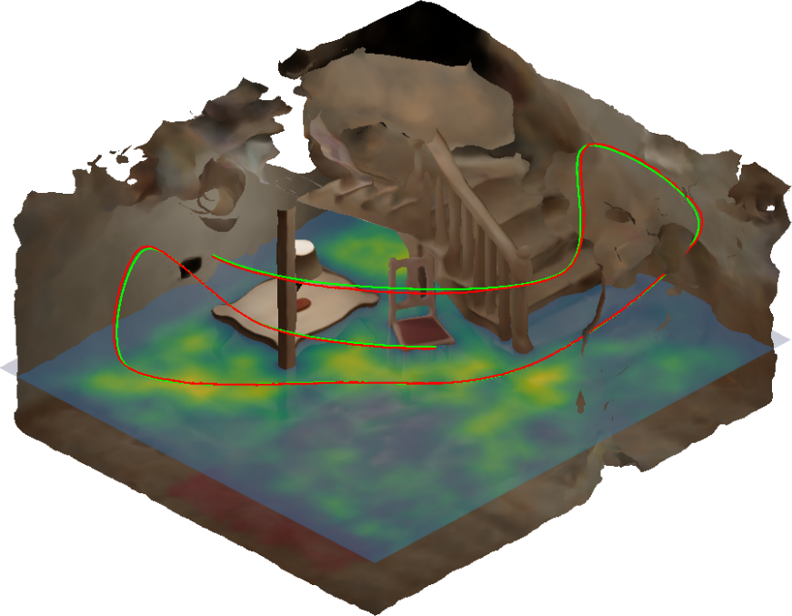
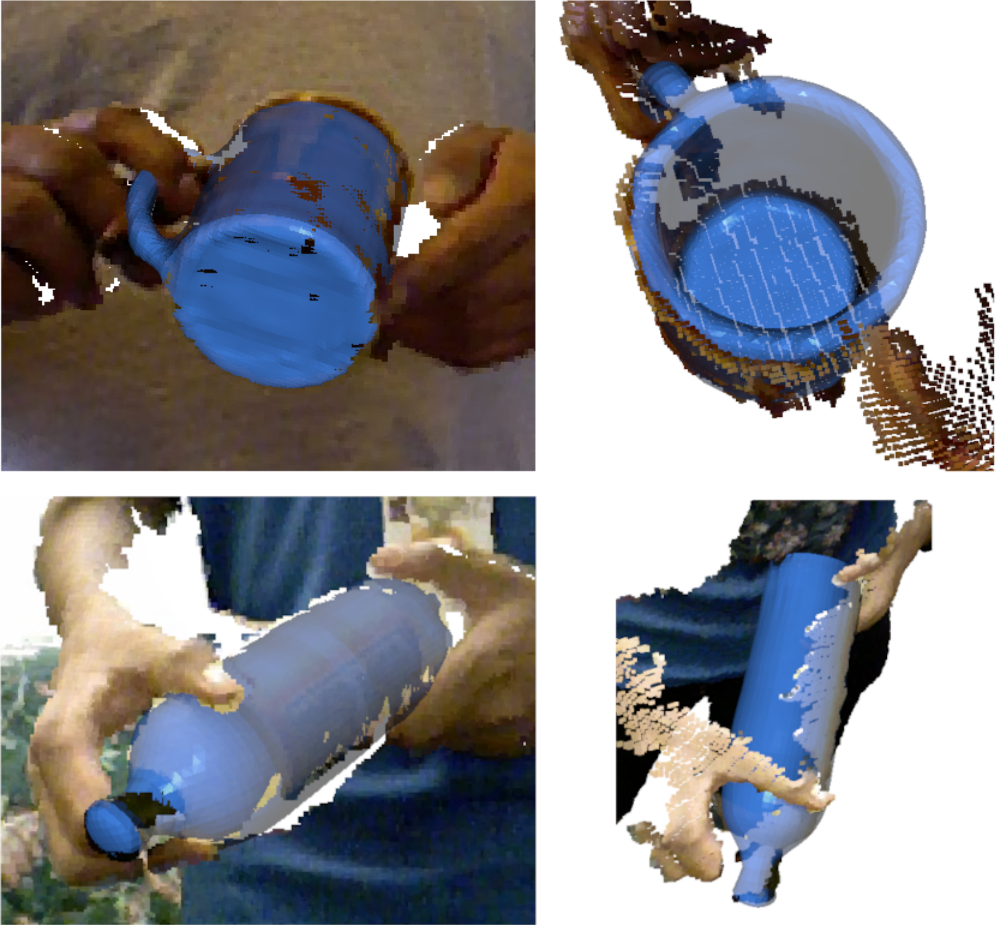
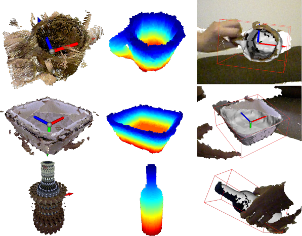
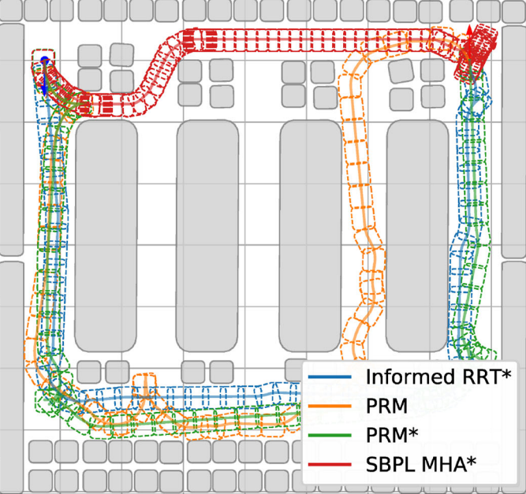
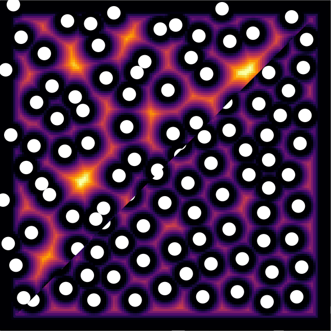
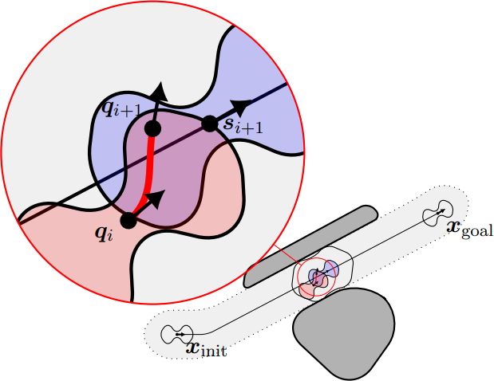

ACE-G: Improving Generalization of Scene Coordinate Regression Through Query Pre-Training
IEEE/CVF International Conference on Computer Vision (ICCV), 26751-26761

Neural Graph Map: Dense Mapping with Efficient Loop Closure Integration
IEEE/CVF Winter Conference on Applications of Computer Vision (WACV), 2900-2909, 2025









